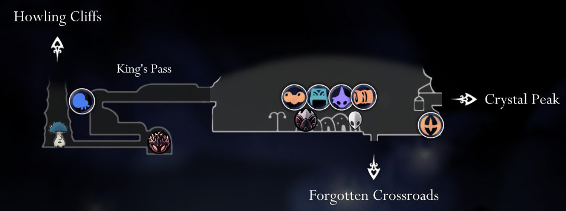
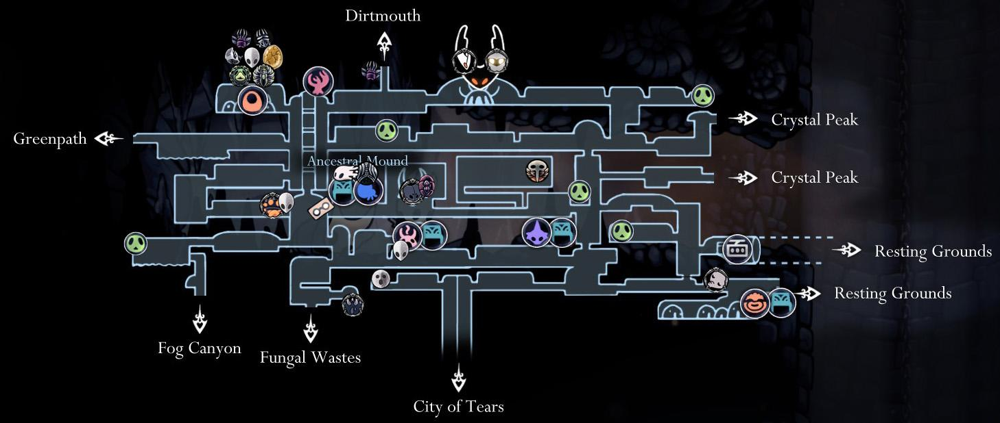
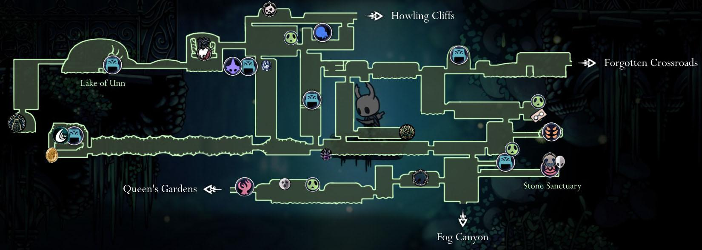
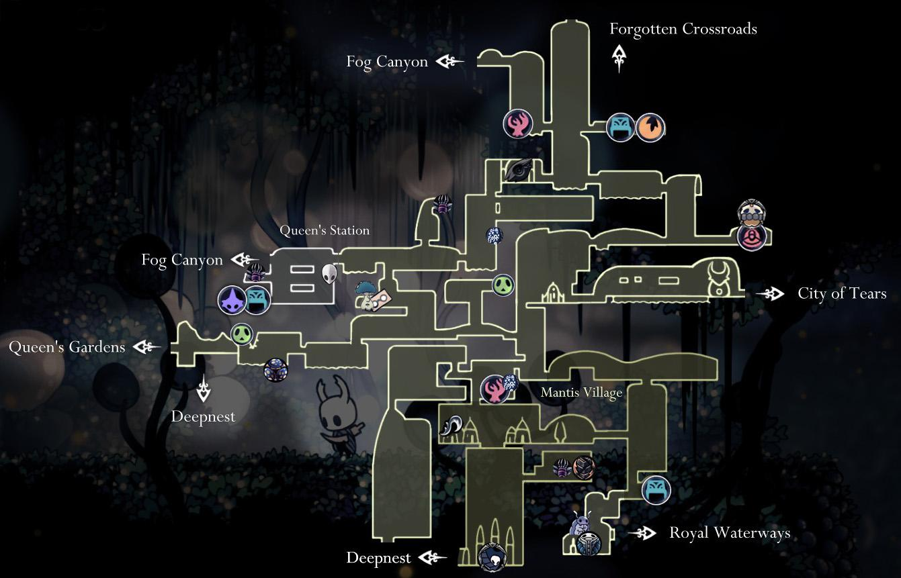
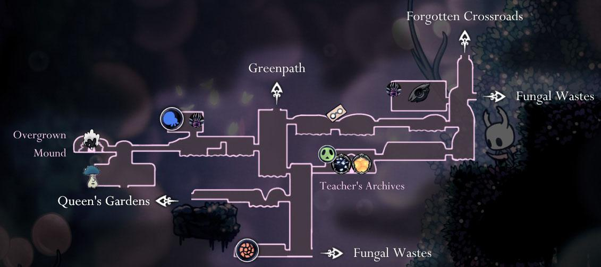
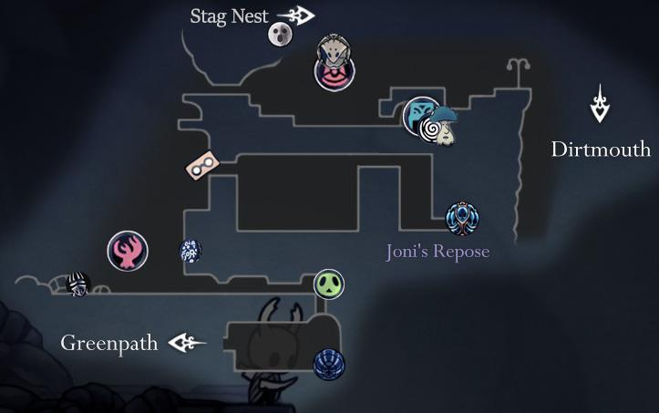

MAPS
You should know that the game has several possible ways to complete. It means you can choose a completely different way than the one mentioned here and still achieve the game. Currently, the game has lots of explorable maps, and each has a set of areas, paths, and enemies to defeat as well. So before starting the game, you have to reveal how to complete it strategically and reach the end to win. Here are some maps and a way how to finish. Let’s explore them together!
- Dirtmouth
- Forgotten Crossroads
- Greenpath
- Fungal Wastes
- Fog Canyon
- Howling Cliffs
- City of Tears
- Crystal Peak
- Resting Ground
- Kingdom’s Edge
- Queen’s Garden
- Ancient Basin
Dirtmouth

Dirtmouth is located right above the ruins of the kingdom of Hallownest, in a barren valley with rare tufts of grass, safe from the winds of the wasteland. Many lumafly lamposts are erected in and around town. Travellers used to come through the King's Pass, west of the valley, during the kingdom's heyday. However, a large door now bars access to the pass and the bridge leading down from it collapsed, forcing the occasional wanderers through hard detours around the cliffs. The Knight reaches Dirtmouth through that pass after breaking down its stone door, marking the start of their journey through Hallownest.
Forgotten Crossroads

The highways and crossroads of the Forgotten Crossroads used to be bustling with life. Many travellers and traders passed through the area as it had many connections to the rest of Hallownest.The Pilgrim's Way, a road leading to the City of Tears, started in the west of the Crossroads.
Due to the Infection and the passage of time, all travel through the Crossroads ceased. It is now an empty place, overrun with wild beasts and reanimated Hallownest citizens.
Greenpath

Greenpath is inhabited by the Mosskin Tribe, a group of plant-like bugs. They allowed the Pale King to build roads throughout their lush caves, but anyone straying from the paths would face the law of Unn.
The most glaring displays of their skills of carving and construction are the Lore Tablets scattered across Greenpath and the temple built to worship their god, Unn, which is located on the shores of the Lake of Unn, where the Higher Being lives.
Fungal Wastes

The noxious caverns of the Fungal Wastes are covered in mushrooms of all kinds. Besides this, caustic pools of acid are abundant throughout the area.
The native population of the Fungal Wastes mainly consists of the Mushroom Clan and the Mantis Tribe. The Mushroom Clan is a group of fungal creatures who have a shared mind. They share a border with Deepnest, whose inhabitants they were in conflict with. When the Pale King arrived in Hallownest, they accepted his rule due to their strong belief that his foresight could protect them.
However, the Mantis Tribe who live in the south part of the area had no love for the kingdom of Hallownest. The Mantises agreed to a truce where they would retain sovereignty over their territory, and in return, they would keep the beasts of Deepnest at bay.
Fog Canyon

The misty caverns of Fog Canyon are filled with bubbles and acid lakes, with some areas covered in thorns. The ground and walls usually consist of rocks or short, green flora. The bubbles in the region have trapped, swirling gases inside them, and the ones with an orange glow can explode when they are popped.
The main feature of the area was the Teacher's Archives, where Monomon the Teacher stored all her research and the kingdom's knowledge. In an attempt to stop the Infection, Monomon became a Dreamer, sleeping for eternity in her archives, protected by the intelligent being Uumuu.
Howling Cliffs

A steep cliff bordering the wasteland outside the Pale King's domain, inhabited by small crawling and flying enemies. The ground is littered with husks and corpses of bugs.
The Pale King granted wild bugs sentience through his beacon. The ones who chose to leave the kingdom lost their memories. Most bugs living in the wastelands outside Hallownest are unintelligent as sapience would seemingly be a weakness in their environment.